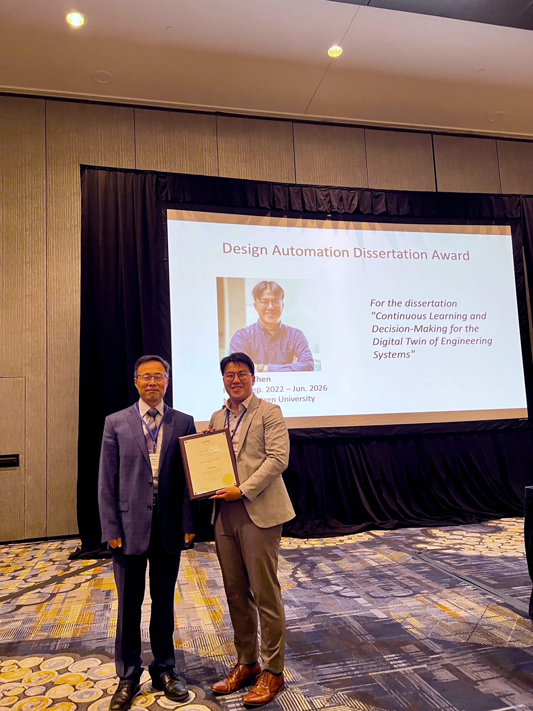

I am honored to receive the 2026 ASME Design Automation Dissertation Award. The award recognizes outstanding doctoral research in the field of design automation.
My dissertation, “Continuous Learning and Decision-Making for the Digital Twin of Engineering Systems,” develops methods that help digital twins learn from evolving data and support reliable engineering decisions.